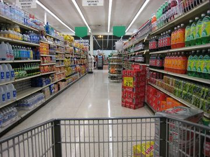

Comprar ropa, hacer el supermercado, pagar y entender precios. Vocabulario diario indispensable para vivir en Alemania.
| Alemán | Español |
|---|---|
| der Supermarkt | el supermercado |
| der Markt | el mercado |
| das Kaufhaus | la tienda departamental |
| die Bäckerei | la panadería |
| die Apotheke | la farmacia |
| die Kasse | la caja registradora |
| der Kiosk | el kiosco |
| das Einkaufszentrum | el centro comercial |
| der Second-Hand-Laden | la tienda de segunda mano |
| die Drogerie | la droguería/perfumería |
| der Flohmarkt | el mercado de pulgas |
| Alemán | Español |
|---|---|
| der Preis | el precio |
| teuer / billig / günstig | caro / barato / económico |
| der Rabatt / das Angebot | el descuento / la oferta |
| bezahlen / zahlen | pagar |
| bar / mit Karte | en efectivo / con tarjeta |
| die Quittung | el recibo |
| umtauschen | cambiar / devolver |
| die Größe | la talla/tamaño |
| anprobieren | probarse (ropa) |
| der Einkaufswagen / -korb | el carrito / la canasta |
| das Kleingeld | el cambio / las monedas |
| die Tüte | la bolsa |
| Alemán | Español | Ejemplo |
|---|---|---|
| die Größe | la talla | Welche Größe haben Sie? |
| anprobieren | probarse | Kann ich das anprobieren? |
| die Umkleidekabine | el probador | Die Umkleidekabine ist hinten links. |
| passen | quedar (de talla) | Die Hose passt mir nicht. |
| stehen | verse bien a alguien | Die Farbe steht dir gut! |
| zu groß / zu klein / zu eng | muy grande / muy chico / muy apretado | Das Hemd ist zu eng. |
| das Hemd / die Bluse | la camisa / la blusa | Ich suche ein weißes Hemd. |
| die Hose | el pantalón (uno) | Ich brauche eine neue Hose. |
| die Schuhgröße | el número de zapato | Ich habe Schuhgröße 43. |
| das Kleid | el vestido | Das Kleid ist sehr elegant. |
| Alemán | Español | Ejemplo |
|---|---|---|
| das Angebot | la oferta | Diese Woche sind Äpfel im Angebot. |
| der Rabatt | el descuento | Es gibt 20 Prozent Rabatt. |
| reduziert | rebajado | Die Jacke ist reduziert. |
| der Schlussverkauf | las rebajas de temporada | Im Januar ist Schlussverkauf. |
| günstig / preiswert | a buen precio | Das ist sehr günstig. |
| die Kasse | la caja | Bitte zahlen Sie an der Kasse. |
| kontaktlos zahlen | pagar sin contacto | Kann ich kontaktlos zahlen? |
| die Tüte | la bolsa | Brauchen Sie eine Tüte? |
| geschlossen | cerrado | Sonntags sind die Geschäfte geschlossen. |
| Lo correcto | Por qué | No digas |
|---|---|---|
| Die Hose passt mir. | passen pide Dativ | Die Hose passt mich. ✗ |
| Die Farbe steht dir. | verse bien: stehen + Dativ | Die Farbe steht dich. ✗ |
| Wie viel kostet das? | cuánto cuesta: wie viel | Wie viele kostet das? ✗ |
| Ich suche eine Hose. | die Hose es una sola prenda | Ich suche ein Pantalon. ✗ |
| Haben Sie das in Größe M? | la talla: die Größe | Haben Sie das in Talle M? ✗ |